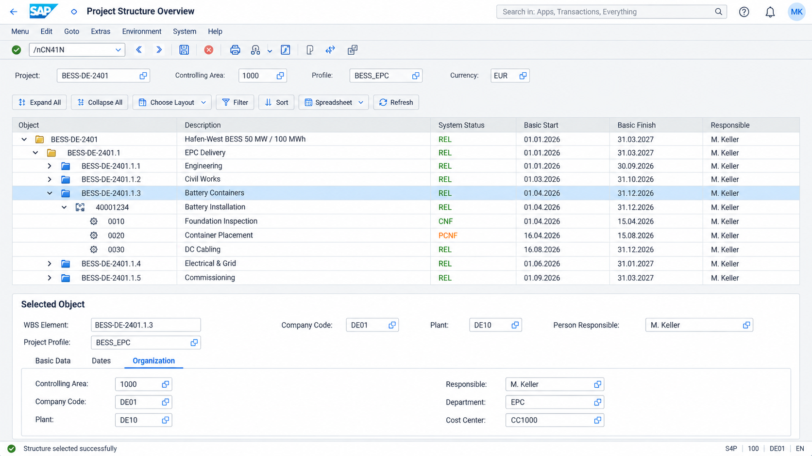
BESS · SAP S/4HANA UI
Hafen-West · 50 MW / 100 MWh · BESS-DE-2401
GPT Image 生成的 12 张界面图。业务数据及版本适用性说明见 说明文件。

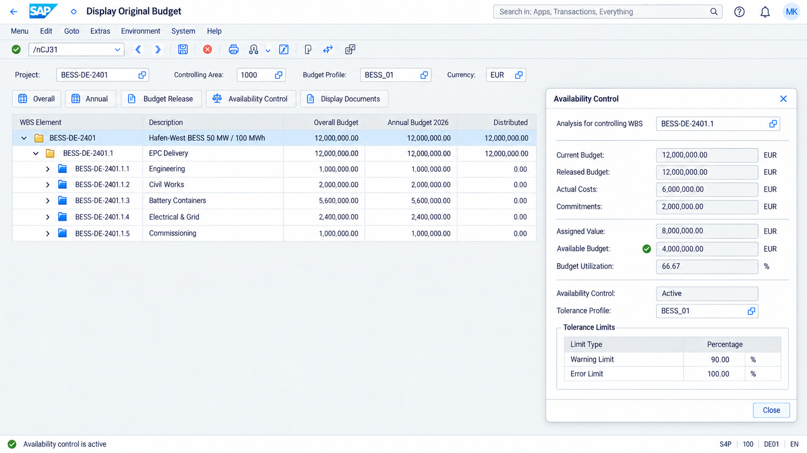
03 · Construction Progress Report – Excel Entry
Baufortschrittsbericht – Excel-Erfassung
/SAPPCE/PNV08
PNG · 1672 × 941
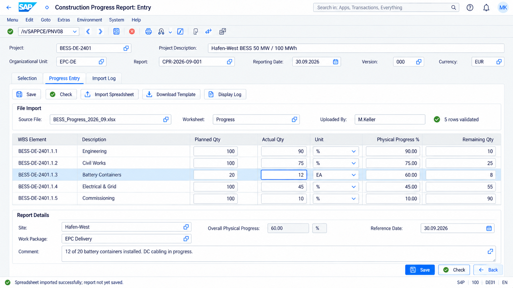
04 · Construction Progress Report – Display
Baufortschrittsbericht – Anzeige
/SAPPCE/PNV09
PNG · 1672 × 941
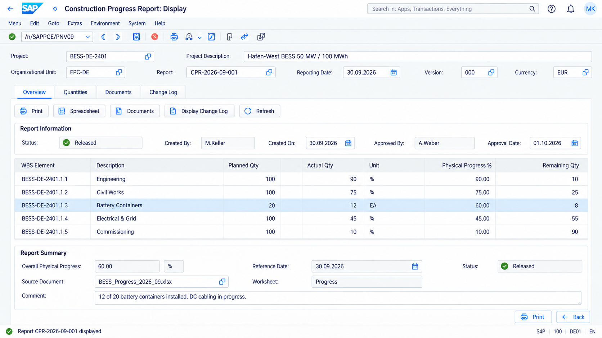
05 · Project Cost/Revenue Comparison Report
Projektkosten-/Erlösvergleichsbericht
CN41N / CJE0
PNG · 1672 × 941
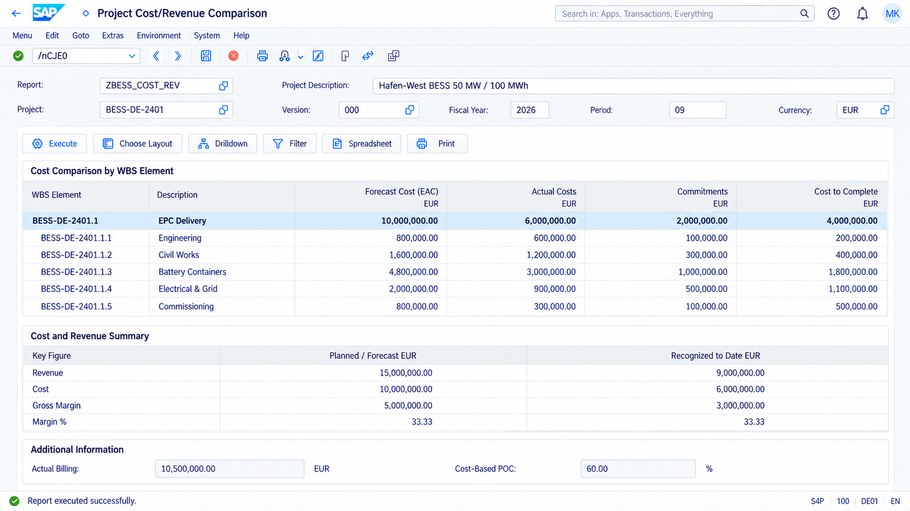

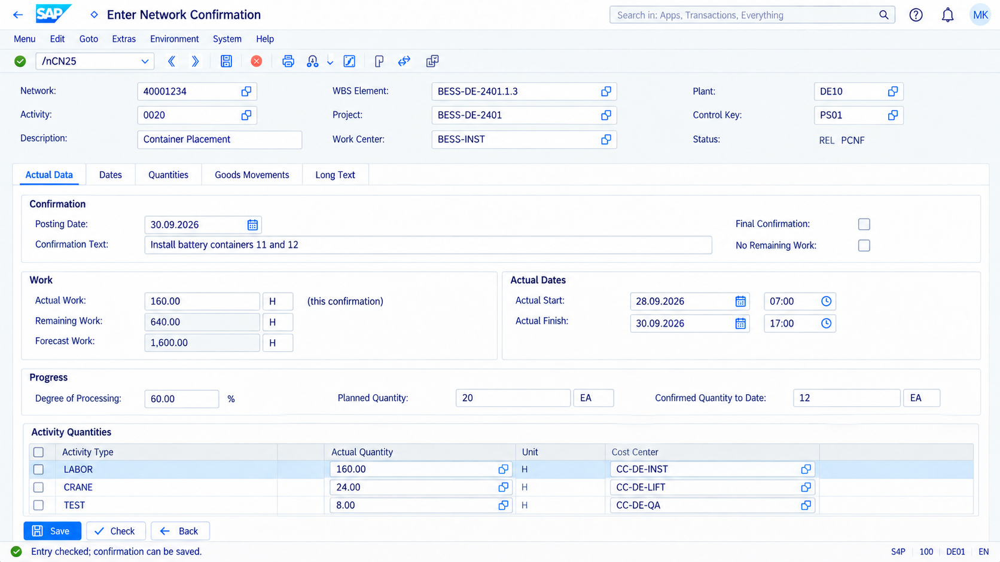

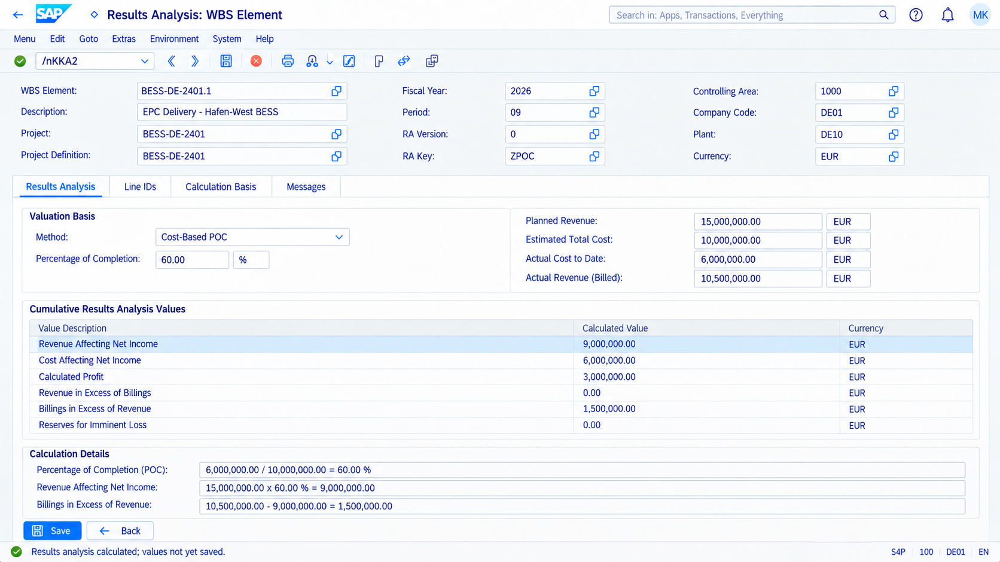

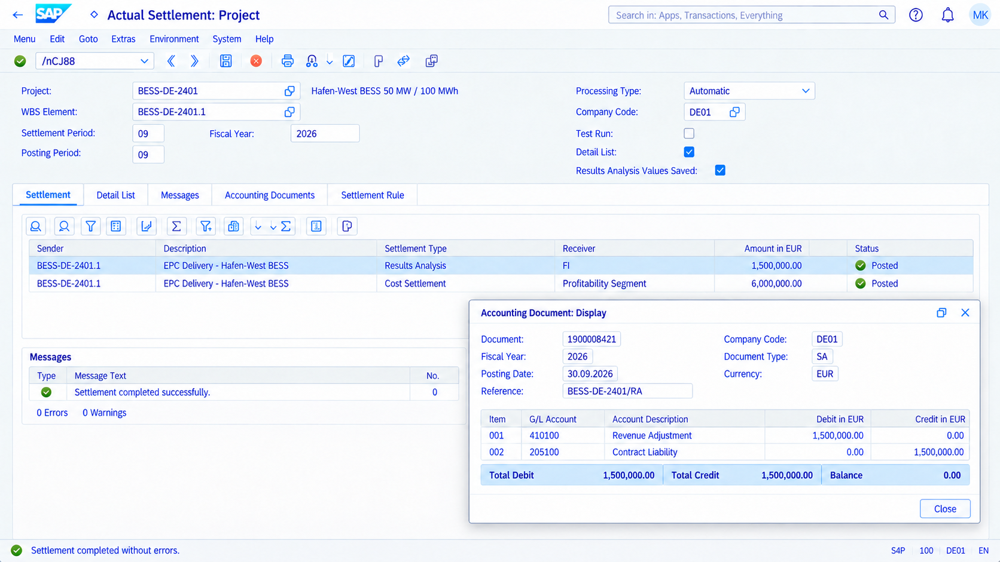
09 · Service Contract & Maintenance Plan Assignment
Servicevertrag & Wartungsplan-Zuordnung
VA41 / IP01 / IP02
PNG · 1672 × 941
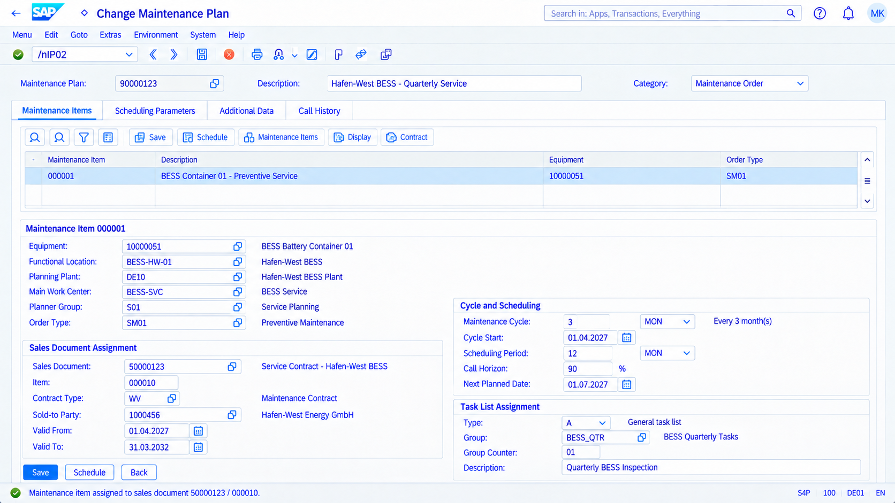

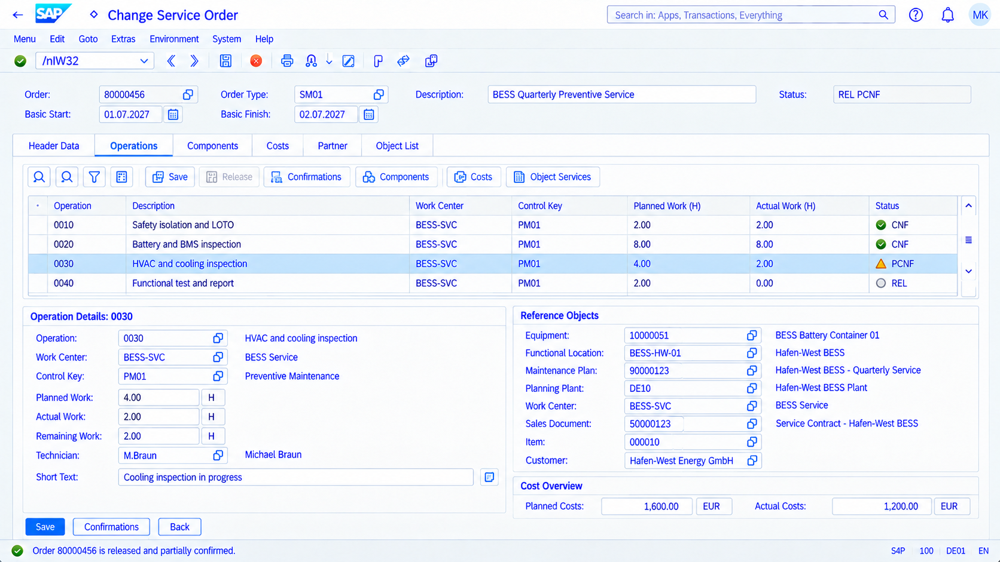
11 · Service History & Equipment/Product Master
Servicehistorie & Equipment-/Produktstammdaten
IE03 / IW39
PNG · 1672 × 941
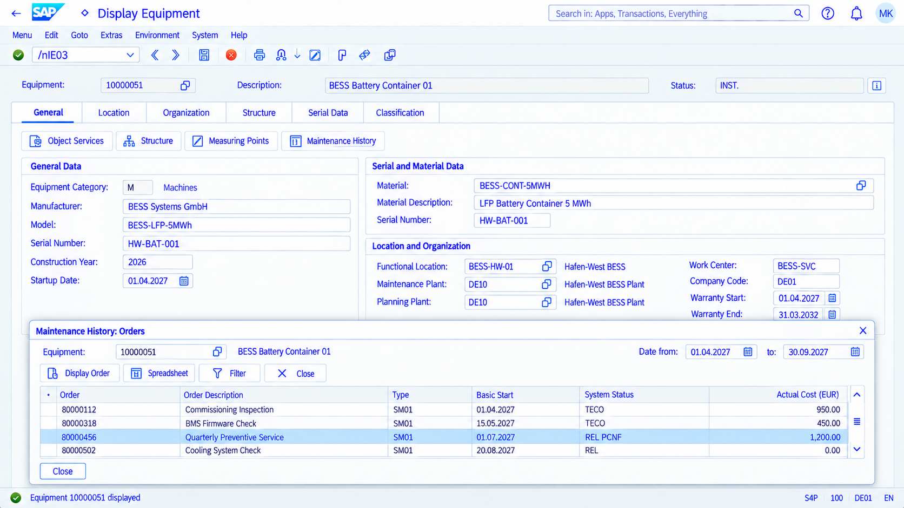
12 · Loss Provision / Revenue Deferral / Contract Liability
Drohverlustrückstellung / Umsatzabgrenzung / Vertragsverbindlichkeit
KKA2 / CJ88 / Revenue Accounting
PNG · 1672 × 941
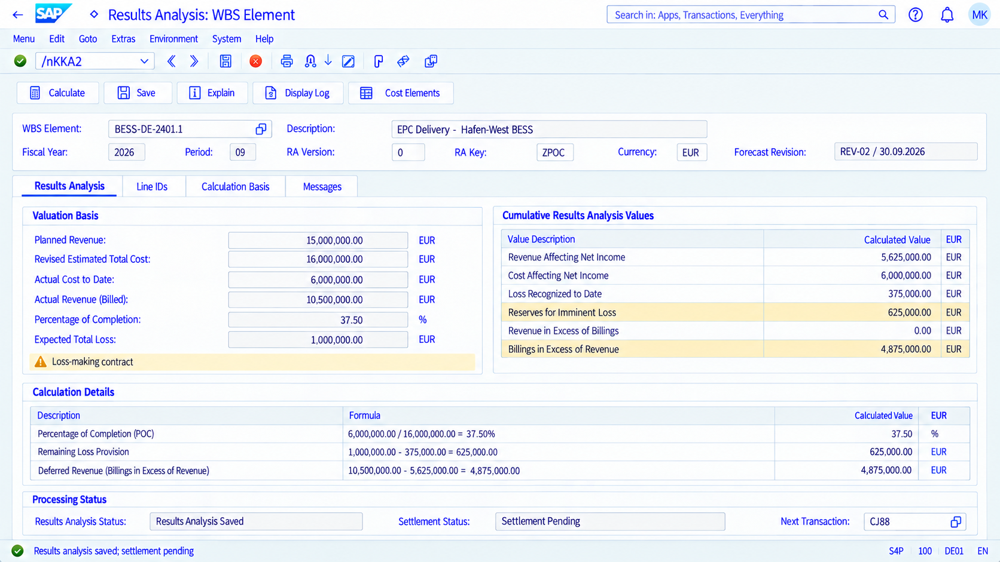